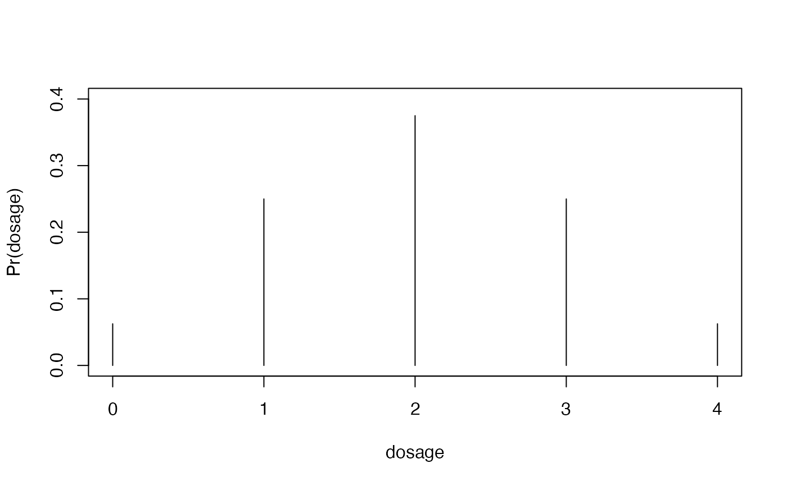
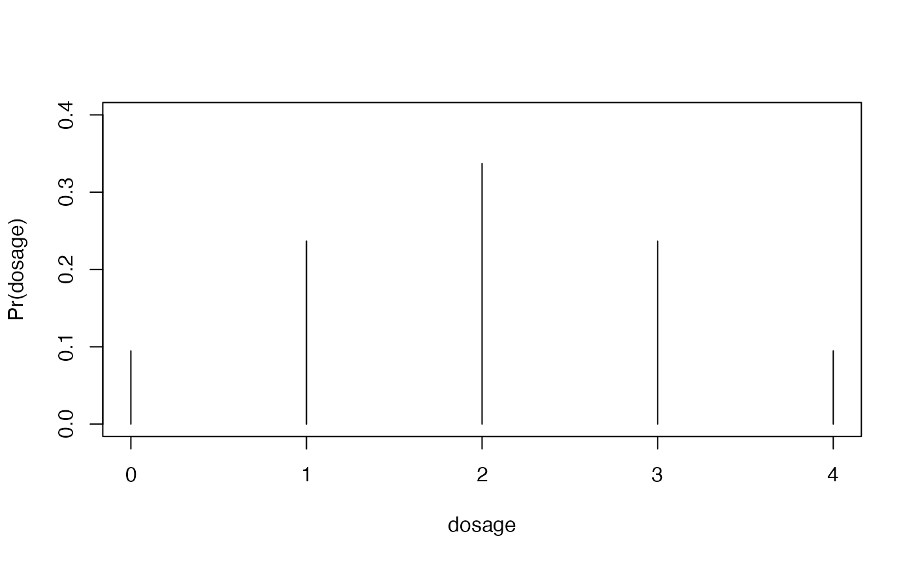

Generate genotype frequencies under Hardy-Weinberg equilibrium
given the allele frequency of the reference allele (r),
the double reduction parameter (alpha), and the ploidy
of the species (ploidy).
Usage
hwefreq(
r,
alpha,
ploidy,
niter = 100,
tol = sqrt(.Machine$double.eps),
more = FALSE
)Arguments
- r
The allele frequency of the reference allele.
- alpha
A numeric vector containing the double reduction parameter(s). This should be a vector of length
floor(ploidy/4)wherealpha[i]is the probability of exactlyipairs of IBDR alleles being in the gamete. Note thatsum(alpha)should be less than 1, as1 - sum(alpha)is the probability of no double reduction.- ploidy
The ploidy of the species. This should be an even positive integer.
- niter
The maximum number of iterations to simulate.
- tol
The stopping criterion on the Chi-square divergence between old and new genotype frequencies.
- more
A logical. Should we return more output (
TRUE) or less (FALSE). See the Value section for details.
Value
If more = FALSE, then returns just the genotype frequencies
after niter generations of random mating. If more = TRUE,
then returns a list with these genotype frequencies, as well as
the parental gamete frequencies.
Details
If alpha is not all 0, then this function repeatedly
applies freqnext() to simulate genotype frequencies
under HWE. Otherwise, it uses dbinom().
Examples
freq1 <- hwefreq(r = 0.5, alpha = 0, ploidy = 4)
freq2 <- hwefreq(r = 0.5, alpha = 1/6, ploidy = 4)
plot(x = 0:4,
y = freq1,
type = "h",
ylim = c(0, 0.4),
xlab = "dosage",
ylab = "Pr(dosage)")

plot(x = 0:4,
y = freq2,
type = "h",
ylim = c(0, 0.4),
xlab = "dosage",
ylab = "Pr(dosage)")
